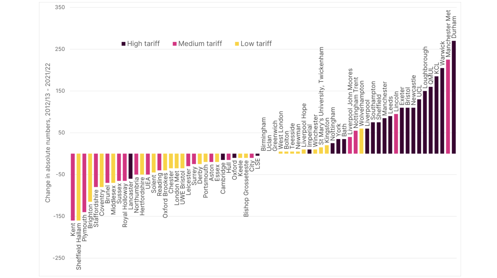
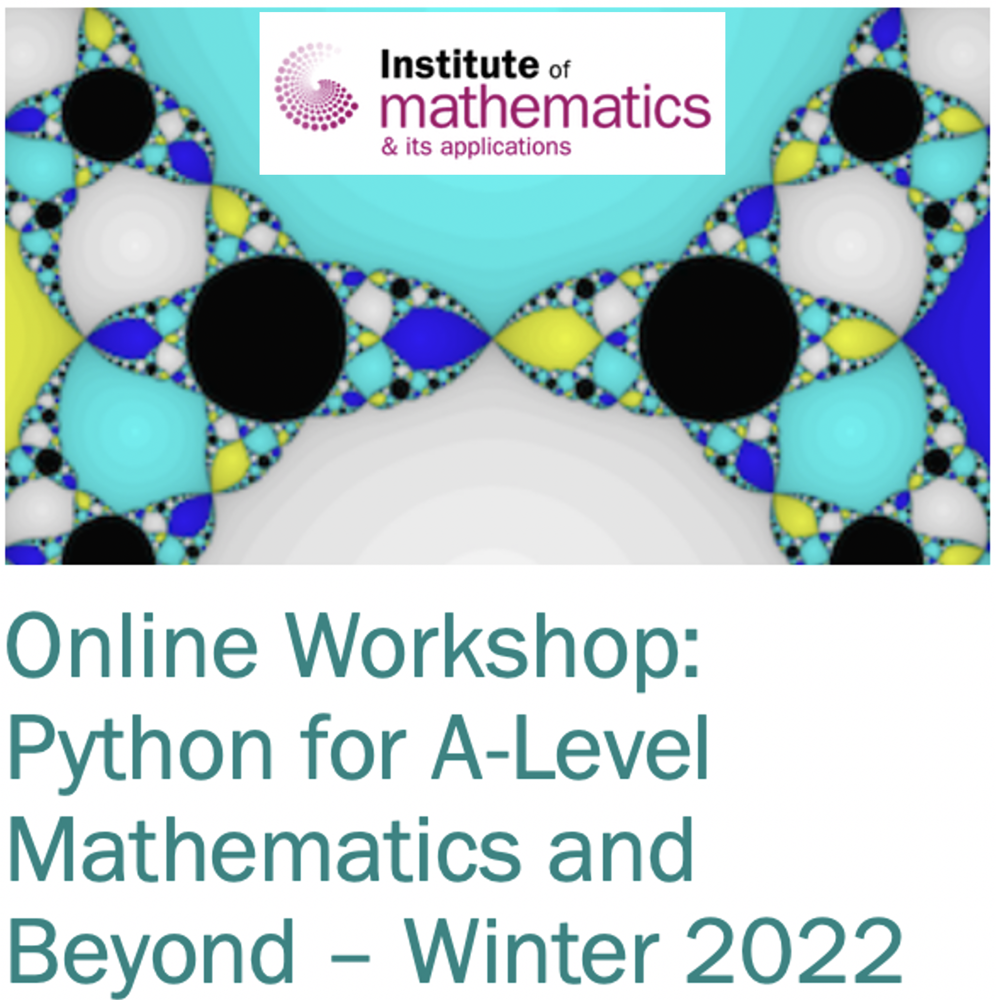

Professor
Stephen Lynch NTF FIMA SFHEA
Impact: Change in Recruitment Numbers 2012-2022 in Mathematics

|
The figure above shows the impact of schools liaison.
Manchester Met. is an outlier and is a result of my schools
liaison work. Over a 25-year period I visited over 100 schools
and colleges in the North-West and ran workshops for pupils and
teachers promoting mathematics.
In 2022, my work was recognised with the award of a National
Teaching Fellowship. Manchester Met. had the second highest
change in recruitment in mathematics in the country.
LMS Report: Mathematics in Higher Education |
Schools LiaisonMy talks include: Royal Institution Mathematics Masterclass:An Introduction to Fractals with Python I am a STEM Ambassador, Speaker for Schools and a Public Engagement Champion. |
 |
IMA Festival 2014